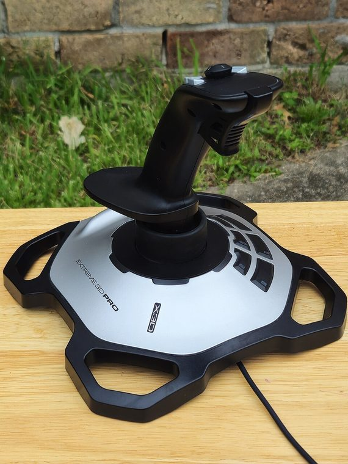
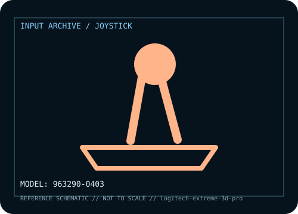

[ JOYSTICK CONTROLLERS // IDENTIFIED COMPONENT ]
Logitech Extreme 3D Pro Joystick
Wired flight stick with twist rudder, throttle slider, hat switch and programmable controls.


MODEL IDENTIFICATION: Manufacturer model / identifier: 963290-0403. Compare the unit label, regional suffix, and revision against manufacturer documentation before repair or compatibility claims.
Model specifications
| Catalog subcategory | Joystick controllers |
|---|---|
| Exact model / ID | 963290-0403 |
| Model-specific features | 12 buttons, 8-way hat, twist rudder and weighted base; software/game profiles determine mappings. |
| Interface and host support | USB HID joystick; legacy games may use DirectInput; current OS driver support can vary. |
| Revision / driver caveat | Verify 963290-0403; do not confuse with G X56 HOTAS or assume legacy drivers remain supported. |
Preservation and service notes
Keep stick centered/dry, inspect cable, record calibration and avoid over-torquing twist grip.
Record the as-found label, accessories, host OS, driver or firmware version, and test method. Separate observed condition from published specifications; family-level claims are not proof of an individual unit's revision.
Manufacturer source
- Logitech Extreme 3D Pro Joystick — manufacturer model pageModel-specific manufacturer reference for identifying specifications, regional SKU, and linked current support documentation.
Manufacturer pages can change or retire. Preserve the applicable manual and note its revision when documenting a physical device.